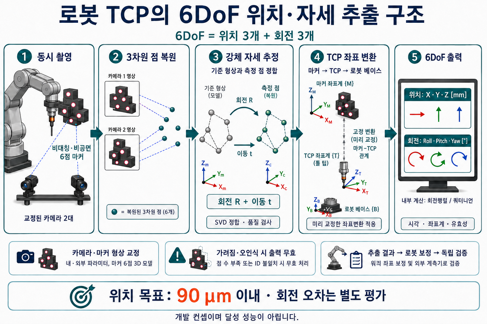
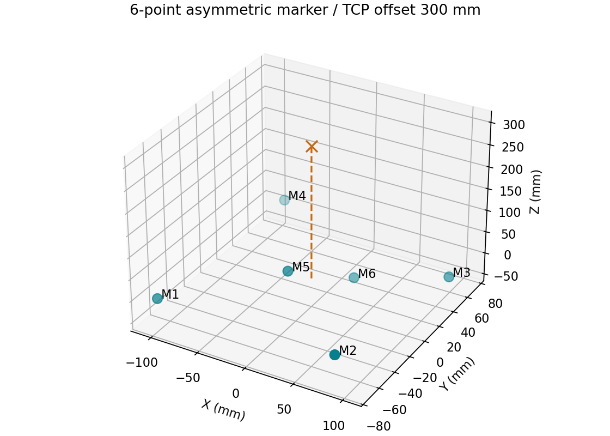
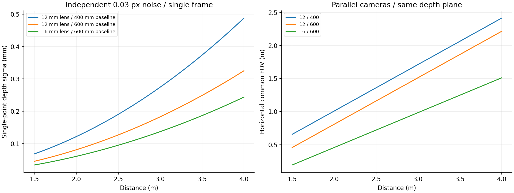
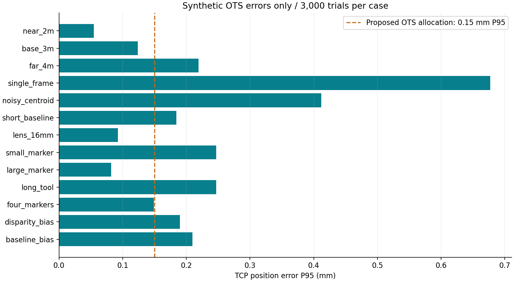
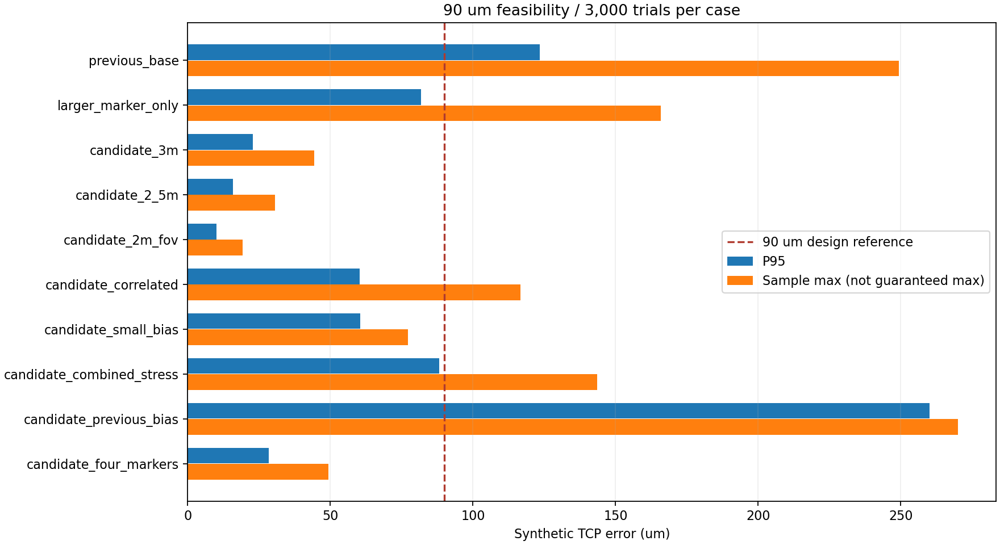

HD로보틱스 — 개발 컨셉·세부 사양·설계 시뮬레이션¶
계획 중 · 설계 후보 및 수치 시뮬레이션 · 검토일 2026-09-07
설계 방향
정지 측정용 적외선 스테레오 헤드 + 비대칭 6점 강체 마커 + 자동 보정 SW를 기본 구조로 제안한다. 2~3 m 거리, 600 mm 카메라 기준선, 12 mm 렌즈를 출발점으로 삼고, 90 μm 지향 설계는 16 mm 렌즈·확대 마커·TCP 이격 150 mm·60프레임 평균 조합을 추가 검토한다. 실측 센서 데이터가 없는 단계이므로 아래 결과는 설계 민감도 분석이며, OTS 또는 로봇의 달성 성능이 아니다.
학생을 위한 한 장 설명¶

6DoF 아키텍처 이미지 크게 보기·다운로드 · 보정 전체 흐름 그림
{kind=link}
{kind=link}
이 시스템은 공구 끝이 어디에 있고 어느 방향을 향하는지, 즉 TCP의 6DoF 위치·자세를 외부에서 측정합니다. 추출한 결과는 로봇 보정과 독립 검증으로 연결합니다. 그림은 작동 원리를 설명하는 개념도이며, 실제 마커 형상·치수·기준 계측 장비를 확정한 제작 도면이 아닙니다.
| 순서 | 학생용 설명 | 시스템이 하는 일 |
|---|---|---|
| ① 동시 촬영 | 두 눈으로 같은 표식을 봅니다. | 교정된 두 카메라로 로봇의 강체 마커를 동시에 촬영합니다. |
| ② 3차원 점 복원 | 표식의 각 점이 공간 어디에 있는지 구합니다. | 좌우 ID를 대응하고 삼각측량으로 점별 X·Y·Z를 복원합니다. |
| ③ 강체 자세 추정 | 점들의 전체 모양이 얼마나 이동·회전했는지 찾습니다. | 교정된 기준 형상과 측정 점을 SVD로 정합해 회전 R과 이동 t를 추정합니다. |
| ④ TCP 좌표 변환 | 표식의 위치·방향을 실제 공구 끝 기준으로 바꿉니다. | 고정된 마커–TCP 관계와 카메라–베이스 관계를 적용합니다. |
| ⑤ 6DoF 출력 | 위치 세 값과 회전 세 값을 읽습니다. | X·Y·Z와 Roll·Pitch·Yaw, 내부 회전행렬·쿼터니언, 시각·좌표계·유효성을 출력합니다. |
추출 후에는 여러 자세의 로봇 관절값과 6DoF 실측값으로 보정값을 구합니다. 보정 적용 후 새 검증 자세에서 별도 기준 계측기로 효과를 확인합니다.
꼭 알아둘 용어¶
- 마커: 카메라가 찾기 쉬운 위치 표식입니다. 로봇에 단단히 붙여야 표식의 움직임으로 로봇의 움직임을 알 수 있습니다.
- TCP: 공구 끝처럼 실제로 작업하는 점입니다. 마커 중심과 다르므로 두 위치 사이의 관계를 교정해야 합니다.
- 6DoF: 위치 X·Y·Z의 3자유도와 회전의 3자유도를 합한 것입니다. 마커가 6개이기 때문에 6DoF가 되는 것은 아닙니다.
- 위치와 자세: 위치는 “어디에 있는가”, 자세는 “어느 방향을 향하는가”입니다. TCP에는 작업점뿐 아니라 공구 방향을 나타내는 좌표축도 정의합니다.
- OTS: Optical Tracking System의 약자로, 빛과 카메라를 이용해 위치·자세를 측정하는 시스템입니다.
- 캘리브레이션: 여러 측정 결과를 이용해 로봇 모델이나 좌표계의 오차를 찾아 보정하는 과정입니다. 한 점에서 찾은 오차를 모든 위치에 똑같이 더하는 것으로 끝나지 않습니다.
90 μm 목표를 이해하는 방법¶
90 μm는 0.09 mm, 즉 1 mm의 9%입니다. 현재는 OTS로 계산한 TCP 위치의 오차를 이 범위 안에 넣는 설계를 검토하고 있습니다. 로봇이 실제로 목표에 도착하는 오차에는 로봇 모델·하중·좌표계 정합 등의 영향도 추가됩니다.
60프레임을 평균하면 서로 독립적인 흔들림은 줄어들 수 있지만, 잘못 교정된 카메라에서 생기는 일정한 편향은 없어지지 않습니다. 또한 마커와 TCP가 멀면 작은 각도 오차가 TCP에서 큰 위치 오차가 됩니다. 그래서 카메라 해상도뿐 아니라 마커 배치·TCP 거리·교정·독립 검증이 중요합니다.
생각해 볼 질문
마커가 정확히 보이는데도 공구 끝의 위치는 틀릴 수 있을까요? 마커–TCP 관계가 잘못되었거나 자세 오차가 있으면 가능합니다. 따라서 마커 원점 오차와 실제 TCP 오차를 따로 확인해야 합니다.
6DoF 추출에 필요한 구조와 데이터¶
마커는 로봇에 단단히 고정한 비대칭 3차원 구조로 설계하고, 각 점의 좌표를 실측 교정합니다. 서로 다른 깊이에 점을 두어 다양한 시점에서 식별성과 배치 품질을 확보하는 안입니다. 비공면이 6DoF의 절대적인 수학적 필수조건은 아닙니다. 대응을 알고 있는 비공선 3점도 강체 자세를 결정할 수 있으나, 본 시스템은 중복 관측과 품질 판단을 위해 검수용 4점 이상을 제안합니다.
한 점의 X·Y·Z만 얻으면 그 점을 중심으로 얼마나 회전했는지 알 수 없습니다. 여러 점의 상대적 배치를 함께 비교해야 회전과 이동을 동시에 구할 수 있습니다. 마커 형상이 휘거나 잘못된 ID를 대응하면 강체 자세 추정이 틀릴 수 있습니다.
| 필요한 입력 | 의미 |
|---|---|
| 카메라 내부·외부 교정 | 영상 좌표를 일관된 3차원 측정 좌표로 복원하는 기준 |
| 마커 형상·고유 ID | 마커 좌표계에서 각 점의 실측 3차원 좌표와 대응 관계 |
| 관측된 점 좌표 | 스테레오로 복원한 동일 ID 점들의 카메라 좌표 |
| 마커–TCP 변환 | 마커 기준에서 공구 끝 좌표계의 위치·방향 |
| 베이스–카메라 변환 | 카메라 측정을 로봇 베이스 기준으로 표현하는 관계 |
좌표변환의 방향¶
이 절에서 C는 카메라 측정 좌표계, M은 마커, B는 로봇 베이스입니다. T_A_B는 B 좌표를 A 좌표로 바꾸는 행렬이며 열벡터를 사용합니다.
측정 점: p_C = R_C_M × p_M + t_C_M
강체 정합 출력: T_C_M = [R_C_M, t_C_M; 0, 1]
최종 출력: T_B_TCP = T_B_C × T_C_M × T_M_TCP
행렬 곱은 오른쪽부터 적용됩니다. 영상의 “마커 → TCP → 로봇 베이스”는 처리 순서 설명이며, 행렬 곱의 방향은 위 식으로 고정합니다. 마커에서 TCP로 바꿀 때는 위치 오프셋뿐 아니라 고정된 회전 관계도 반영해야 합니다.
출력 형식과 품질 판정¶
| 출력 | 정의 |
|---|---|
position_mm |
로봇 베이스 기준 TCP의 X·Y·Z |
rpy_deg |
고정축 xyz 규약의 Roll·Pitch·Yaw, R = Rz(yaw) Ry(pitch) Rx(roll) |
quaternion_xyzw |
같은 회전을 표현하는 단위 쿼터니언, 성분 순서 x·y·z·w |
T_B_TCP |
TCP 좌표를 베이스 좌표로 변환하는 4 × 4 행렬 |
valid, timestamp, frame_id |
기본 품질 검사 결과·취득 시각·기준 좌표계 |
fit_rms_mm, visible_markers |
강체 정합 잔차와 관측 점 수; 절대정확도 인증값은 아님 |
RPY는 학생용 표시와 인터페이스에 사용하고, 합성·보간·오차 계산에는 회전행렬 또는 쿼터니언을 사용합니다. 오일러 각의 특이점에서는 개별 각도가 유일하지 않을 수 있으므로 euler_singular를 알리고, 제어기와 축 순서·단위·쿼터니언 순서를 일치시킵니다. SciPy 오일러 각 규약 · 쿼터니언 성분 순서
점 수 부족·거의 일직선인 배치·ID 불일치·과도한 잔차가 있으면 무효 처리합니다. 실제 구현에는 시야, 재투영 잔차, 시간 정합, 공분산 및 추적 복구 검사도 필요합니다. 작은 정합 잔차만으로 90 μm 정확도를 확인할 수 없습니다.
학생용 실행 예제¶
6DoF 추출 Python 코드 · 합성 입력 JSON · 실행 출력 JSON
NumPy·SciPy가 필요합니다. 첫 명령은 알려진 이동·회전으로 만든 6점 합성 데이터를 복원하고 수치 검사를 실행합니다. 두 번째 명령은 JSON의 기준 형상·관측 3D 점·교정 변환을 읽어 6DoF를 출력합니다. 실측 적용 시 입력 점은 같은 ID·같은 순서로 제공해야 하며, 카메라 영상 검출·ID 매칭·삼각측량·로봇 제어는 이 예제에 포함되지 않습니다.
합성 예제의 출력은 위치 약 [-369.332, 55.405, 2645.294] mm, RPY 약 [11.887, 1.785, 42.070]°입니다. 실제 측정 결과가 아닙니다. 예제의 잔차 문턱 0.1 mm와 형상 비율 0.02는 교육용 입력값이며 장비 합격 기준이 아닙니다. valid=true는 기본 기하 검사 통과만 뜻하며, 출력의 accuracy_verified=false를 유지합니다.
정확한 변환 합성·RPY/쿼터니언 재구성, 중복 ID·일직선 형상·3점 관측·큰 이상점의 거부를 검사했습니다. 이 검사는 계산 구현 확인이며 광학계나 로봇의 실제 성능 시험은 아닙니다.
1. 시스템 개발 컨셉¶
flowchart LR
R[로봇 플랜지·TCP] --- M[비대칭 적외선 강체 마커]
M --> L[좌측 글로벌 셔터 카메라]
M --> C[우측 글로벌 셔터 카메라]
S[공통 트리거·마커 구동] --> L
S --> C
S --> M
L --> P[검출·ID·스테레오 복원]
C --> P
P --> F[기준 마커 형상과 SVD 정합]
F --> T[회전 R·이동 t 및 TCP 좌표변환]
T --> O[6DoF 출력·품질 판정]
O --> A[기존 보정 알고리즘]
Q[로봇 관절값·취득 시각] --> A
A --> V[보정값 검토·적용·복원 관리]
V --> R
R --> I[독립 기준 계측·최종 검증]초기 시제품은 검증된 산업용 카메라·렌즈를 활용하고, 스테레오 하우징, 마커 툴, 트리거·구동 회로, 교정·추적·연동 SW를 개발하는 안이다. 이미지 센서 및 카메라 전자회로 자체 설계는 별도 범위로 둔다. 2대 구성으로 가시성과 정확도를 먼저 확인하고, 추가 카메라 도입은 가려짐 시험 결과에 따라 판단한다.
측정 헤드는 로봇 베이스와 독립된 강성 지지대에 설치한다. 카메라 사이의 상대 위치·각도가 유지되도록 초점·조리개·체결을 고정하고 온도를 기록한다. 마커가 보이지 않는 구간에서는 측정을 중단·재시도하며, 추정값을 검수용 실측값으로 대체하지 않는다.
2. 카메라·광학·동기화 사양안¶
다음은 구매 확정 사양이 아닌 시제품 설계 요구안이다. 제품의 공개 사양과 본 과제의 설계 목표를 구분한다.
| 항목 | 1차 설계 후보 | 선정·검증 기준 |
|---|---|---|
| 카메라 | 흑백 글로벌 셔터 2대, 2448 × 2048급 | 두 카메라 동시 노출, 영상 누락·노출 편차 확인 |
| 픽셀 크기 | 계산 기준 3.45 μm | 센서 교체 시 픽셀 단위 초점거리와 시야 재계산 |
| 렌즈 | C-mount, 2/3인치 센서 대응, 12 mm 기본·16 mm 비교 | 선택 파장에서 초점·투과율·왜곡·주변부 중심 검출 성능 평가 |
| 기준선 | 600 mm 기본, 400 mm 비교 | 기준선을 늘리면 깊이 민감도는 개선되지만 공통 시야가 감소 |
| 측정 거리 | 초기 2~3 m, 4 m는 확장 시험 | 마커 전체의 공통 시야·유효 계측률로 영역 판정 |
| 촬영·출력 | 촬영 60 fps 목표, 정지 측정 30프레임 평균 후보 | 평균화 취득만 약 0.5초; 이동·안정화·ID·연산 시간은 별도 |
| 노출 | 0.2~2 ms 탐색 범위 | 광량 시험으로 확정; 포화·번짐·잔류 진동 억제 |
| 영상 | 원시 흑백, 지원되는 10/12 bit 취득 모드 검토 | 감마·자동 노출·자동 게인은 계측 시 고정, 유효 비트수 확인 |
| 파장·필터 | 850 nm 능동 마커 우선 검토, 대역폭 20~40 nm 후보 | LED 스펙트럼·필터 입사각·렌즈 투과율·센서 감도를 함께 실측 |
| 중심 검출 | 단일 프레임·각 영상축 잡음 σ = 0.03 px를 설계 가정 | 실제 달성 여부 미확인; σ = 0.10 px 조건도 계산 |
| 동기화 | 공통 하드웨어 트리거, 노출 시작 차이 10 μs 이하 목표 | 오실로스코프·노출 신호로 지터와 지연 검증; PC 수신시각으로 대체하지 않음 |
| 전송 | 카메라별 독립 USB3 경로 또는 동등 대역폭 | 5 MP × 2대 × 60 fps × 8 bit ≈ 602 MB/s 원시 데이터; 16 bit 저장 시 약 1.20 GB/s, 오버헤드 별도 |
| 열·기구 안정성 | 카메라·프레임 온도 기록, 워밍업 후 교정 | 온도 변화·재체결 후 기준 길이·기준 자세로 재확인 |
하드웨어급 비교 사례로 Basler acA2440-75um은 공식 문서에 5 MP, 기본 2448 × 2048, 3.45 μm 픽셀, 글로벌 셔터, 기본 75 fps 및 하드웨어 트리거를 제시한다. 해당 문서의 Spectrum 표기는 Visible이므로, 이 모델을 850 nm OTS용으로 선정한 것은 아니다. 근적외선 감도·광량·중심 검출 시험을 통과하는 센서와 광학계를 최종 선정한다. 제조사 사양
60 fps 목표는 데이터 전송·노출·처리 시간을 포함해 검증한다. LED의 연속·펄스 전류, 발열, 구동 듀티는 부품 선정 후 결정한다. 광출력 수치나 0.03 px 성능을 부품 사양만으로 확정하지 않는다.
3. 마커 툴 상세 설계¶
| 항목 | 설계 후보 | 개발 항목 |
|---|---|---|
| 기본 형상 | 비대칭·비공면 6점, 중심점 배치 외곽 약 210 × 145 × 90 mm | 유사 거리 패턴·좌우 대응 모호성·가려짐 검사 |
| 크기 비교 | 기본의 0.5배 / 1배 / 1.5배 | 확대안 외곽 약 315 × 217.5 × 135 mm; 충돌·관성·장착 공간과 비교 |
| 발광부 | 850 nm LED와 확산부, 유효 발광 지름 6~10 mm 후보 | 12 mm 렌즈에서 2~3 m 거리의 이상적 투영 지름 약 7~17 px; 실제 광점은 광학계·포화에 따라 변함 |
| ID | 강체의 비대칭 기하 패턴 기본, 점멸 코드 보조 후보 | 코드 길이에 따른 재인식 지연·동기·잘못된 ID 비율 검증 |
| 관측 점수 | 정상 6점, 검수용 최소 4점 제안 | 점 수와 함께 배치·잔차·공분산 확인; 3점 이하이면 제안 정책상 재측정 |
| TCP 이격 | 마커 중심에서 300 mm 이하 우선, 가능한 한 단축 | 실제 툴 형상 기준; 회전 오차에 따른 TCP 오차를 별도 평가 |
| 장착 | 위치결정 핀·강성 체결, 케이블 하중 분리 | 반복 장착과 부하별 휨 측정, 마커–TCP 재정합 |
| 형상 교정 | 각 발광 중심의 3차원 좌표를 실측해 모델 저장 | CAD 좌표를 참값으로 사용하지 않음; 중심의 관측각 의존성 평가 |
| 질량·무게중심 | 대상 로봇과 툴의 잔여 허용 하중으로 결정 | 구조 설계 후 질량·관성·처짐 계산; 현 단계 확정 질량 없음 |
대응 관계를 알고 있는 비공선 3점으로도 강체 자세를 구할 수 있지만, 이 계획은 중복 관측과 품질 판단을 위해 검수용 4점 이상을 제안한다. 4점 관측만으로 정확도가 보장되지는 않는다. 카메라별 관측 가능 점과 강체 조건을 함께 확인한다.

그림의 점은 발광 중심이며 제작 도면이 아니다. 시뮬레이션은 코드에 공개한 6개 좌표를 무게중심 원점으로 옮겨 사용한다. 4점 조건은 M1~M4만 남기는 한 가지 누락 패턴이다. 모든 가려짐 조합이나 실제 로봇 구조물의 차폐를 계산한 결과는 아니다.
능동 마커를 우선 검토하되, 수동 반사 마커와의 비교시험도 수행한다. 능동형은 전원·동기·발열·발광각을, 수동형은 카메라 근접 조명·입사각·주변 반사체 오검출을 평가한다. 확산부·반사구의 크기가 곧 중심 위치 정확도를 의미하지 않는다.
4. 정밀도와 오차 예산 설계¶
최종 로봇 목표는 기존 계획의 위치 0.5 mm, 자세 0.1° 이하이다. OTS에는 별도의 초기 설계 배분안이었던 TCP 위치 P95 0.15 mm에서 강화하여 90 μm(0.09 mm) 이내를 핵심 설계 지향값으로 둔다. 적용 대상·최대값/P95의 최종 합의 전에는 OTS의 실제 TCP 위치 오차를 대상으로 P95와 표본 최대값을 모두 검토한다. 자세 P95 0.03°는 기존 내부 검토 기준이다. 이는 논문 실적이나 확정 검수 규격이 아니며, 아래 합성 데이터 민감도 분석과 실측 오차 예산을 바탕으로 조정할 내부 설계 기준이다.
| 오차 항목 | 관리 방법 |
|---|---|
| 영상 중심 검출 잡음 | 거리·광량·마커 각도별 반복 측정, 시간 상관 확인 |
| 카메라 내부·외부 교정 | 독립 기준물로 공간 오차 검사; 재투영 잔차만으로 합격 판정하지 않음 |
| 기준선·초점거리 변화 | 온도·진동·장착 상태 추적, 교정 파라미터 버전 관리 |
| 마커 자세와 TCP 이격 | 실제 TCP에서 오차 계산; 위치와 회전의 상관 포함 |
| 마커 형상·체결·TCP 교정 | 실측 형상, 반복 장착, 기준 TCP 교정 |
| 로봇 모델·베이스 정합 | 별도 검증 자세, 최종 도달 시험과 분리 보고 |
P95는 표본의 95백분위수이며 최대 오차 보증이 아니다. 각 항목의 P95를 단순 더하거나 제곱합하여 최종 최대값을 보증하지 않는다. 상관·편향·불확도를 포함한 실측 평가가 필요하다. 0.05 mm 공간 분해능 목표도 잡음 시뮬레이션만으로 검증되지 않는다.
5. 시뮬레이션 방법과 재현 조건¶
기하학적 민감도¶
평행·정류된 핀홀 카메라를 가정한다. f_px = 초점거리 / 픽셀 크기, B = 기준선, d = 좌우 시차, Z = 깊이일 때 다음 관계를 사용한다.
Z = f_px × B / d
σ_Z ≈ Z² / (f_px × B) × √2 × σ_pixel
σ_Z,mean ≈ σ_Z / √N (프레임 잡음이 독립일 때만)
공통 수평 시야 ≈ max(0, 영상폭_px × Z / f_px − B)
TCP 회전 기여 ≈ 수직 이격 거리 × 작은 회전 오차_rad
12 mm / 3.45 μm의 f_px는 약 3478 px이다. 기준선 600 mm, σ_pixel = 0.03 px이면 단일 점의 깊이 표준편차는 2 m에서 약 0.081 mm, 3 m에서 약 0.183 mm이다. 독립 30프레임 평균 시 3 m 값은 약 0.033 mm로 감소하지만, 이는 3차원 TCP 오차나 분해능을 의미하지 않는다. 핀홀 투영·교정·삼각측량의 구현 기준은 OpenCV 공식 문서를 참고하였다. 본 계산 코드는 해당 특수 기하의 식을 직접 구현한다.

12 mm / 600 mm 구성의 2 m 평면 공통 시야는 약 0.808 × 1.178 m, 3 m에서는 1.511 × 1.766 m이다. 16 mm 렌즈로 바꾸면 2 m의 공통 수평 시야가 약 0.456 m로 줄어든다. 마커 크기·회전·시야 여유를 제외하기 전 값이므로 그대로 로봇 작업 체적으로 사용하지 않는다.
몬테카를로 계산¶
- 시나리오별 3,000회, 난수 시드
20260907; 비교 조건에는 같은 난수열을 사용한다. - 강체 원점은 카메라 기준선 중점 기준 X·Y 각각 ±100 mm, Z는 시나리오 거리로 고정한다. xyz 오일러 각을 각각 ±30°에서 균등 추출한다. 전체 SO(3) 균등 분포나 로봇 가동 영역을 의미하지 않는다.
- 6점 형상을 좌우 카메라에 투영하고, 각 영상 좌표에 독립 가우시안 잡음을 더한다. 정지 30프레임 평균은
σ/√30인 잡음으로 계산한다. - 좌우 영상에서 삼각측량 후 가중치 없는 SVD 강체 정합으로 자세를 추정한다. TCP = 마커 좌표의
[0, 0, 300] mm를 변환하고 참 TCP와 3차원 거리·상대 회전각을 비교한다. - 영상 경계 10 px 여유를 검사하며, 선택 점이 모두 시야에 있고 4점 이상인 경우만 계산한다. 3점 조건은 정책에 따라 거부한다.
- 고정 시차 편향 +0.03 px, 기준선 교정값 +50 ppm 오류를 각각 별도 시나리오로 추가한다. 편향은 평균화로 줄이지 않는다.
포함하지 않은 항목: 광원·센서의 영상 생성과 광자 잡음, 렌즈 왜곡 잔차의 공간 분포, 잘못된 ID, 실제 차폐·발광각, 마커 제작 오차, 열 변형의 시간 변화, 베이스 정합, 로봇 기구학·제어기·진동·충돌. 따라서 이번 작업은 OTS 기하·잡음 설계 시뮬레이션이며 로봇 보정 성능의 디지털 트윈 검증은 아니다. 실제 알고리즘에서는 삼각측량의 방향별 불확도를 반영한 가중 정합 또는 영상 재투영 기반 자세 추정도 비교한다.
6. 실행 결과¶
기본 조건은 3 m / 12 mm / 기준선 600 mm / 6점 / 30프레임 / σ 0.03 px / TCP 300 mm이다. 각 행은 표시된 조건만 바꾼다. 위치·자세 통계는 유효 표본 기준이며, CSV에는 표본 최대값·원점 오차·유효 표본 수도 포함한다.
| 변경 조건 | TCP 위치 RMS (mm) | TCP 위치 P95 (mm) | 자세 P95 (°) | 유효 / 전체 |
|---|---|---|---|---|
| 거리 2 m | 0.031 | 0.055 | 0.011 | 3000 / 3000 |
| 기본 조건 3 m | 0.071 | 0.124 | 0.024 | 3000 / 3000 |
| 거리 4 m | 0.126 | 0.219 | 0.043 | 3000 / 3000 |
| 평균화 없음, 1프레임 | 0.387 | 0.677 | 0.131 | 3000 / 3000 |
| 중심 검출 σ 0.10 px | 0.236 | 0.412 | 0.080 | 3000 / 3000 |
| 기준선 400 mm | 0.106 | 0.184 | 0.036 | 3000 / 3000 |
| 렌즈 16 mm | 0.053 | 0.093 | 0.018 | 3000 / 3000 |
| 마커 0.5배 | 0.140 | 0.247 | 0.048 | 3000 / 3000 |
| 마커 1.5배 | 0.048 | 0.082 | 0.016 | 3000 / 3000 |
| TCP 이격 600 mm | 0.140 | 0.247 | 0.024 | 3000 / 3000 |
| M1~M4만 관측 | 0.084 | 0.149 | 0.029 | 3000 / 3000 |
| 3점 관측, 정책상 거부 | — | — | — | 0 / 3000 |
| 고정 시차 편향 +0.03 px | 0.146 | 0.190 | 0.024 | 3000 / 3000 |
| 기준선 교정값 +50 ppm | 0.166 | 0.209 | 0.024 | 3000 / 3000 |

설계에 반영할 결론¶
- 기본 조건의 합성 TCP 위치 P95는 약 0.124 mm로 강화된 90 μm 지향값을 초과한다. 기존 기본안을 90 μm 설계안으로 채택하지 않는다. 표본 최대값도 약 0.249 mm이므로 P95를 최대값으로 해석하면 안 된다.
- 마커 크기와 TCP 이격이 중요하다. 마커를 절반으로 줄이거나 TCP 이격을 600 mm로 늘리면 P95가 약 0.247 mm로 커진다. 마커 확대안과 툴 가까이 배치하는 구조를 함께 검토한다.
- 단일 프레임 또는 중심 검출 악화는 성능을 크게 낮춘다. 단일 프레임의 P95는 약 0.677 mm이다. 정지 안정화와 영상 품질을 먼저 확보하고, 평균화 효과는 시간 상관을 측정해 검증한다.
- 평균화로 교정 편향을 해결할 수 없다. 고정 시차 0.03 px 또는 기준선 50 ppm 오류를 주면 P95가 각각 약 0.190 / 0.209 mm로 증가한다. 기준선 600 mm의 50 ppm은 0.03 mm에 해당한다.
- 4 m를 기본 성능 영역으로 확정하지 않는다. 4 m의 P95는 약 0.219 mm이며, 우선 2~3 m에서 실측 검증한다. 16 mm 렌즈는 오차를 낮추지만 근거리 공통 시야를 줄인다.
표의 100% 유효율은 제한된 합성 자세가 시야·점 수 검사에 모두 통과했다는 뜻이다. 실제 추적 성공률, 인라인 자동 완료율 또는 가려짐 대응률이 아니다. 3점 조건의 0%는 실패 확률의 추정이 아니라 명시한 거부 정책의 결과다.
7. 90 μm 목표를 위한 추가 설계 검토¶
90 μm의 적용 기준
사용자가 제시한 핵심 지향값은 90 μm 이내이다. 현재 추가 계산은 OTS가 측정하는 실제 TCP 위치의 3차원 거리 오차를 대상으로 한다. 최종 로봇 도달 오차인지 OTS 계측 오차인지, 최대값인지 P95인지에 대한 확정은 별도이며, 기존 로봇 도달 목표 0.5 mm를 임의로 0.09 mm로 바꾸지 않는다. 아래 표본 최대값은 시험한 합성 표본 중 최대값이며 전 작업 공간의 보증 상한이 아니다.
강화 설계 후보¶
| 항목 | 기존 계산 기준 | 90 μm 검토 후보 |
|---|---|---|
| 측정 거리 | 2~3 m | 우선 2.5~3 m; 근거리는 공통 시야 재검토 |
| 렌즈·기준선 | 12 mm / 600 mm | 16 mm / 600 mm |
| 마커 중심 배치 외곽 | 210 × 145 × 90 mm | 315 × 217.5 × 135 mm |
| TCP 이격 | 300 mm | 150 mm 이하를 우선 검토 |
| 평균화 | 30프레임 | 60프레임, 60 fps에서 취득만 약 1초 |
| 중심 검출 잡음 | 0.03 px 가정 | 동일 가정; 프레임 상관을 추가 검토 |
| 교정 편향 | 이상적 교정 또는 개별 큰 편향 | 시차 −0.005 px·기준선 +10 ppm의 동시 편향도 계산 |
마커 확대·TCP 근접 배치가 실제 툴에 가능한지는 기구 설계로 확인한다. 16 mm 렌즈와 큰 마커의 조합은 근거리 시야가 좁다. 2 m 조건에서는 합성 자세 3,000개 중 1,953개만 시야 검사에 통과했으므로, 낮은 오차만으로 2 m 사용을 승인하지 않는다.
추가 계산 결과¶
아래 수치는 μm 단위이다. 모든 행은 3,000회 계산하며, 유효 표본에서 통계를 낸다. 기존 기본안과 마커만 확대하는 행을 제외하면 위 강화 후보를 사용한다.
| 조건 | TCP P95 (μm) | TCP 표본 최대 (μm) | 유효 / 전체 |
|---|---|---|---|
| 기존 기본안 | 123.5 | 249.4 | 3000 / 3000 |
| 기존안에서 마커만 1.5배 | 81.8 | 166.0 | 3000 / 3000 |
| 강화 후보 3 m, 독립 잡음 | 23.0 | 44.4 | 3000 / 3000 |
| 강화 후보 2.5 m, 독립 잡음 | 15.9 | 30.6 | 3000 / 3000 |
| 강화 후보 2 m, 시야 제한 | 10.1 | 19.4 | 1953 / 3000 |
| 강화 후보 3 m, 프레임 상관 0.1 | 60.3 | 116.7 | 3000 / 3000 |
| 강화 후보 3 m, 작은 동시 편향 | 60.5 | 77.2 | 3000 / 3000 |
| 강화 후보 3 m, 상관 + 작은 동시 편향 | 88.1 | 143.7 | 3000 / 3000 |
| 강화 후보 3 m, 시차 −0.03 px + 기준선 50 ppm | 260.1 | 270.0 | 3000 / 3000 |
| 강화 후보 3 m, M1~M4 관측 | 28.5 | 49.4 | 3000 / 3000 |

프레임 상관 조건은 각 영상 좌표의 시간 잡음에 동일 상관계수 ρ = 0.1을 가정한다. 평균 잡음은 σ × sqrt(ρ + (1−ρ)/N)로 계산한다. 서로 다른 점·영상축·카메라 사이의 상관은 모델링하지 않는다. 상관계수는 실측값이 아닌 민감도 시험 입력이다. ρ = 1이면 평균화 이득이 사라져 단일 프레임 결과와 일치하는지 코드에서 검사했다.
판단과 필요한 여유¶
- 이상적인 강화 후보는 검토할 가치가 있다. 3 m에서 P95 약 23.0 μm, 표본 최대 약 44.4 μm이다. 그러나 모델에 없는 형상·장착·베이스 정합 오차가 남아 있어 90 μm 달성을 의미하지 않는다.
- P95만으로 통과시키면 안 된다. 상관과 작은 교정 편향을 함께 넣은 조건은 P95 약 88.1 μm지만 표본 최대 약 143.7 μm이다.
- 평균화보다 편향과 시간 상관 관리가 우선이다. 시차 −0.005 px·기준선 +10 ppm 조건에서도 표본 최대가 약 77.2 μm로 증가한다. 잔여 오차와 기준 계측 불확도를 위한 여유가 작다. 이 편향 값을 허용 공차로 확정하지 않는다.
- 넓은 공간과 모든 자세의 보증에는 추가 검증이 필요하다. 합성 자세 ±100 mm, 각도 ±30°의 제한된 결과를 전체 작업 공간으로 확대하지 않는다. 최종 평가 공간과 자세를 사전에 고정하고 독립 표본으로 확인한다.
90 μm를 최대 허용 오차로 확정하는 경우, 별도 기준 계측의 불확도를 포함한 판정 규칙을 수립한다. 예를 들어 적용 가능한 조건에서 측정 오차 + 해당 오차의 확장불확도 ≤ 90 μm의 가드밴드 방식을 검토할 수 있다. 이를 사용하려면 좌표계 정합·기준물·반복성의 불확도와 포함확률을 먼저 평가해야 한다. 단순히 이번 표본 최대값에 임의의 불확도를 더해 합격 처리하지 않는다.
90 μm 추가 계산 코드 · 결과 CSV · 조건·결과 JSON
study_90um.py와 simulate_ots.py를 같은 폴더에 두고 python study_90um.py로 실행한다. 본 계산은 설계 후보를 찾기 위한 동일 난수 표본 비교이며, 후보 선정 후 별도 난수·공간 경계·실측 데이터 검증이 필요하다.
8. 시제품 시험과 다음 시뮬레이션¶
| 단계 | 수행 내용 | 의사결정 기준 |
|---|---|---|
| 광학 벤치 | 카메라·12/16 mm 렌즈·LED·필터 조합 시험, 거리·노출·각도별 중심 검출 | 0.03 px 가정의 타당성, 포화·편향·프레임 상관 측정 |
| 스테레오 교정 | 기준선·내부 파라미터 교정, 별도 기준물 검증 | 깊이별 편향·열 변화 확인, 공통 시야와 유효 영역 확정 |
| 마커 비교 | 기본·축소·확대 형상, 모든 4점 부분집합, 반복 체결 | 실제 TCP 오차·ID 모호성·가려짐·충돌 여유 |
| 시뮬레이션 확장 | 실측 잡음·왜곡·온도 데이터를 입력, 카메라 배치·시야 최적화 | 합성 가정을 계측 데이터로 교체하고 모델 예측과 실측 비교 |
| 로봇 연동 | 대상 로봇 DH/URDF·툴 CAD·관절 범위·API 확보 후 자세 생성 | 가시성·충돌·식별성·경로와 소요시간 검증 |
| 최종 성능 | 기존 보정 연동 후 별도 지령·독립 기준 계측 | 개발 계획서에 합의한 위치·자세·자동화 기준으로 판정 |
현재는 대상 로봇 모델·셀 CAD·실측 카메라 교정값이 제공되지 않아 물리 로봇 동작·충돌·보정 전후 성능 시뮬레이션까지 수행하지 않았다. 해당 입력을 확보하면 이번 기하 모델을 실제 셀 설계와 연결한다.
9. 다운로드와 재현¶
실행 코드 · 전체 결과 CSV · 조건·마커 좌표·검증 결과 JSON
Python과 NumPy·SciPy·Matplotlib이 필요하다. 실행에 사용한 라이브러리 버전은 JSON에 기록했다. 코드는 잡음이 없는 경우 TCP 복원 오차가 1e-7 mm 미만인지, 독립 20만 표본의 깊이 표준편차가 해석식과 1% 이내로 일치하는지 자동 검사한 후 결과와 그래프를 생성한다. 이 검사는 수치 구현의 일관성 검사이며 실제 계측 성능 검증은 아니다.